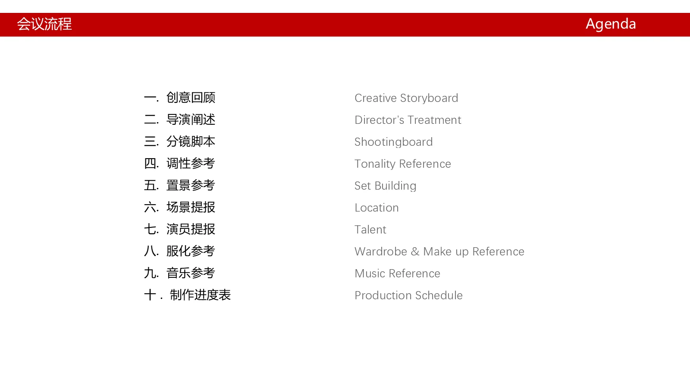
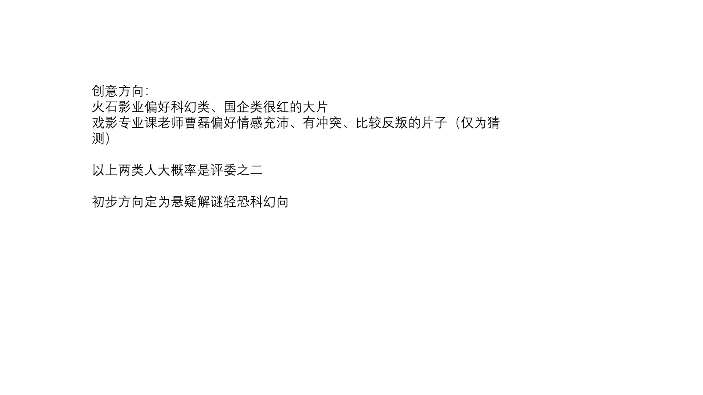
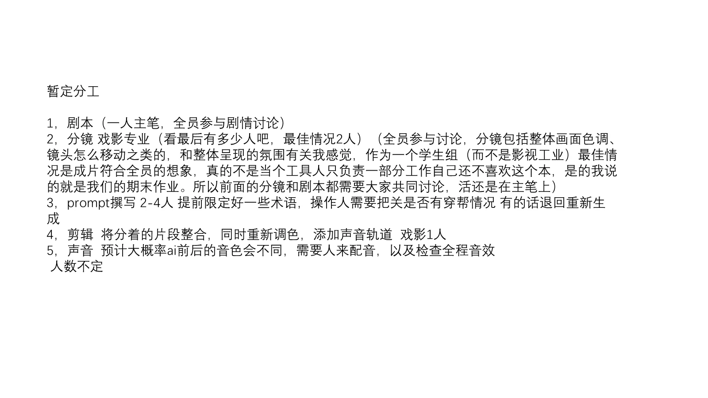
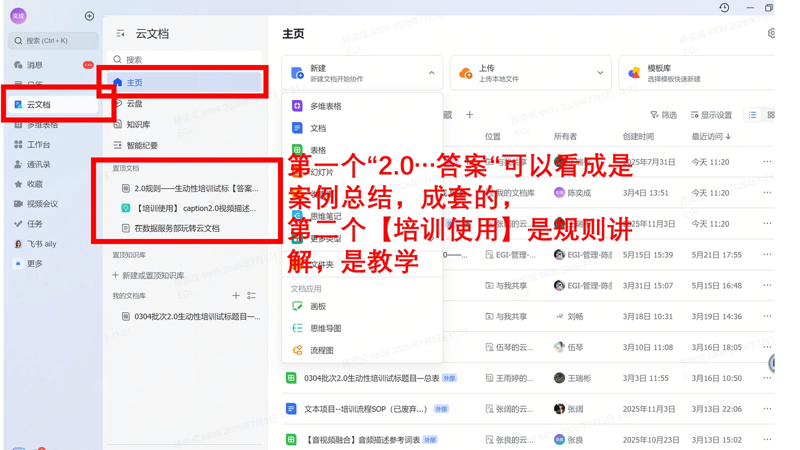
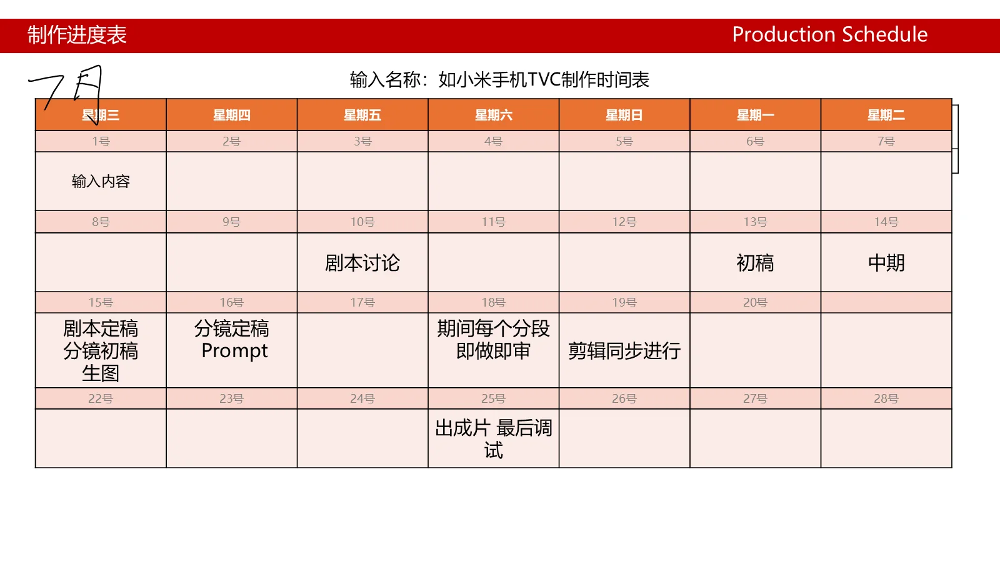

先定创意方向
综合赛事与教学语境，提出悬疑解谜、轻恐科幻的初步方向，并以参考片单帮助团队建立画面共识。
02 / AIGC project leadership
这不是“参与了一部 AI 短片”。我从评审语境和制作约束出发，先搭好 PPM、创意方向、分工、训练与排期，让团队有一套可以共同工作的生产系统。
项目状态：已完成前期 PPM、参考方向、暂定分工、训练入口与制作排期；成片结果尚未在材料中确认。
Read the caseProject positioning
火石影业的科幻偏好、课程评审的情感与冲突倾向，以及 AIGC 影像的技术限制，共同决定了项目的第一步：先不急着生成画面，先把“悬疑解谜 + 轻恐科幻”的方向、生产方式和质量门槛说清楚。
Leadership signal
领导力不只体现在最后署名，也体现在没有人知道下一步时，能否先建立共同语言和工作顺序。
What I led
所有描述都来自 PPM 初稿中的实际记录；“筹备中”不等于“没有成果”，前期结构本身就是项目推进的成果。
综合赛事与教学语境，提出悬疑解谜、轻恐科幻的初步方向，并以参考片单帮助团队建立画面共识。
把创意回顾、导演阐述、分镜脚本、调性、置景、演员、服化、音乐和制作进度放进同一份文档。
明确剧本、分镜、Prompt、剪辑和声音的工作边界，同时强调学生团队要共同讨论而不是只做工具人。
为分镜脚本人员设计训练路径：观看即梦官方内容，并用飞书数据标注培训规则建立提示词与一致性意识。
预设术语、检查穿帮，必要时退回重生成；同时为 AI 前后音色差异预留人工配音、音效检查和手工调色。
按镜头、Prompt、剪辑、配音和后期节点排期，承认时间紧张，并让团队可以按表推进。
Operating system
在 70% 以上 AI 生成占比的约束下，把人工判断放到最需要的地方：方向、连续性、色彩、声音和最终检查。
定义科幻、悬疑和轻恐的组合方式。
全员讨论，主笔负责把共识落到文本。
预设关键词，操作人检查穿帮并回退重做。
人工补足 AI 画面一致性、音色和节奏。
用 PPM 和时间表保留决策与交付证据。
Working documents
每张图对应一个项目动作：不是装饰截图，而是你如何组织项目的可视证据。






Honest status
当前材料能证明的是：创意方向、PPM、分工、训练入口、Prompt 工作参考和排期已经建立。后续仍需完成剧本、镜头生成、剪辑、声音与最终归档。
面对一个高度不确定、需要多人协作且带有技术约束的创作任务，我能先定义问题，再设计流程、训练和质量门槛，让团队知道如何开始、何时回退、怎样交付。
Next step
项目页保留“筹备中”状态，后续只需要补进最终剧本、成片截图和比赛结果，不用重写结构。